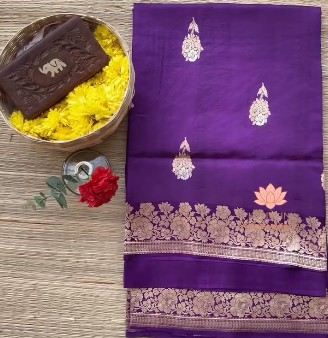
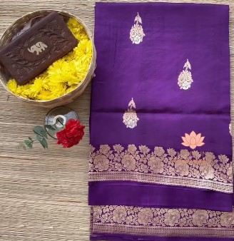

Banarasi Kora / Katan
Intro & History: Banarasi sarees, particularly Kora and Katan varieties, originate from Varanasi (Banaras), one of the oldest continuously inhabited cities in the world. The weaving tradition dates back to the Mughal era (14th–18th centuries), when Persian and Turkish influences merged with local techniques, creating opulent brocade fabrics. Katan uses twisted silk yarns for strength, while Kora uses fine, untwisted silk for a crisp, sheer effect.
Significance & Work: These sarees are woven on jacquard looms with gold and silver zari threads, featuring intricate floral (buti), jaal (trellis), and mina (metallic highlights) patterns. The Kora variant is lightweight and sheer with a luxurious sheen, while Katan offers richer body and drape. Banarasi Kora/Katan sarees are synonymous with grandeur — worn for weddings, religious ceremonies, and celebrations. They represent Varanasi's spiritual and artistic legacy, blending Mughal opulence with Hindu motifs, and remain one of India's most prestigious handloom treasures.
 
